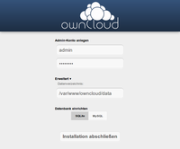

ownCloud
Dieser Artikel wurde für die folgenden Ubuntu-Versionen getestet:
Ubuntu 14.04 Trusty Tahr
Artikel für fortgeschrittene Anwender
Dieser Artikel erfordert mehr Erfahrung im Umgang mit Linux und ist daher nur für fortgeschrittene Benutzer gedacht.
Zum Verständnis dieses Artikels sind folgende Seiten hilfreich:
ownCloud  bietet im Zeitalter von Cloud-Diensten die Möglichkeit, einen selbst verwalteten Server zu betreiben. Bisher gab es zwar viele mehr oder weniger ausgereifte Einzel-Lösungen, aber ownCloud ist das erste Programm, das diese unter einen Hut bringt. Neben einer Datei- und Medienverwaltung (Bilder und Musik) können beispielsweise auch Kontakte, Termine oder Lesezeichen verwaltet werden. Eine komfortable Weboberfläche sowie die Anbindung via WebDAV ermöglichen prinzipiell den Zugriff von beliebigen Geräten aus. Darüber hinaus steht ein nativer Linux-Client zur Verfügung. Eine Online-Demo vermittelt einen ersten Eindruck.
bietet im Zeitalter von Cloud-Diensten die Möglichkeit, einen selbst verwalteten Server zu betreiben. Bisher gab es zwar viele mehr oder weniger ausgereifte Einzel-Lösungen, aber ownCloud ist das erste Programm, das diese unter einen Hut bringt. Neben einer Datei- und Medienverwaltung (Bilder und Musik) können beispielsweise auch Kontakte, Termine oder Lesezeichen verwaltet werden. Eine komfortable Weboberfläche sowie die Anbindung via WebDAV ermöglichen prinzipiell den Zugriff von beliebigen Geräten aus. Darüber hinaus steht ein nativer Linux-Client zur Verfügung. Eine Online-Demo vermittelt einen ersten Eindruck.
Empfohlen wird ein dedizierter Server. Weitere Empfehlungen für verschiedene Einsatzszenarien finden sich in der offiziellen Dokumentation . Neben kommerziellen Angeboten mit Vorinstallation kommen z.B. eigene Root- und V-Server in Frage. Auch innerhalb eines LANs kann der Einsatz nützlich sein. Der Quellcode steht unter der Lizenz AGPL3. Neben der frei verfügbaren "Community Edition" existieren noch kommerzielle Angebote als "Business Edition" bzw. "Enterprise Edition".
Wie bzw. mit welchen Programmen man auf einen ownCloud-Server zugreifen kann, ist in einem eigenen Artikel beschrieben: ownCloud Nutzung.
Versionen¶
Anfang Juni 2016 wurde bekannt  , dass sich Nextcloud von ownCloud abgespaltet hat. Da auch viele der Entwickler dem neuen Projekt beigetreten sind, wird die zukünftige Weiterentwicklung höchstwahrscheinlich von Nextcloud betrieben werden.
, dass sich Nextcloud von ownCloud abgespaltet hat. Da auch viele der Entwickler dem neuen Projekt beigetreten sind, wird die zukünftige Weiterentwicklung höchstwahrscheinlich von Nextcloud betrieben werden.
Die folgende Tabelle beginnt mit der Version 3.x von ownCloud und erhebt keinen Anspruch auf Vollständigkeit.
| ownCloud-Versionen (siehe auch ownCloud) | ||
| Version | Veröffentlichung | Bemerkung |
| 10.0 - 10.0.3 | April 2017 | Support für PHP7, Einführung des Marketplace (App-Store), neues Einstellungsdesign Release notes |
| 9.0 | März 2016 | OwnCloud 9.0 mit besseren Funktionen zur Zusammenarbeit , Release notes |
| 8.2 | Oktober 2015 | Release highlights |
| 8.1 | Juli 2015 | deutlich verbesserte Performance, gemeinsame Bearbeitung von ODT-Textdateien, Beispielthema zur Anpassung der Optik, integrierte Update-Funktion, neues Testwerkzeug SmashBox (Quelle , Quelle ) |
| 8.0 | Februar 2015 | Server-to-Server Sharing überarbeitet, PHP 5.4 oder neuer als zwingende Voraussetzung, verbesserte Suchfunktion, Favoriten, erweiterte LDAP- und AD-Integration (Quelle , Quelle ) |
| 7.0 | Juli 2014 | Server-to-Server Sharing, neuer Installationsassistent, Web- und Administrationsoberfläche wurden überarbeitet (Quelle ) |
| 6.0 | Dezember 2013 | ownCloud Documents (gemeinsames Bearbeiten von ODF-Dokumenten), Aktivitäten-Stream (letzte Änderungen, auch als RSS-Feed), Benutzer-Avatare, Sharing-API, Vorschaubilder für die Dateiformate JPEG, PDF, TXT und ODT, Papierkorb für gelöschte Dateien, überarbeitetes Design, Streaming-Funktionen für Audiodateien wurden entfernt (Quelle , Quelle ) |
| 5.0 | März 2013 | Veränderungen am Benutzerinterface, Möglichkeit zur Wiederherstellung von Dateien, Lucene-basierende Suchfunktion, Virenscanner, verbesserte Versionierung und Kontaktpflege (Quelle , Quelle ) |
| 4.5 | Oktober 2012 | Einbindung von externen Cloud-Diensten, Datei Versionierung, Video Streaming, bessere und schnellere Synchronisation mit dem ownCloud-Client u.a.m. (Quelle ) |
| 4.0 | Mai 2012 | Automatische Dateiverschlüsselung, Revisions-System, gemeinsame Kalendernutzung u.a. (siehe auch Ikhaya-Artikel vom Mai 2012) |
| 3.0 | Februar 2012 | Textdateien online bearbeiten, neue Fotogalerie, integrierter PDF-Betrachter, Verbesserungen im Kalender, Anbindung von apps.owncloud.com . |
Voraussetzungen¶
Die Anwendung benötigt zum Betrieb einen Webserver mit PHP-Unterstützung und eine Datenbank (SQLite, MySQL oder PostgreSQL). SQLite stellt die geringeren Anforderungen. Die notwendigen Informationen zur Installation finden sich in den folgenden Artikeln:
Datenbank-Einbindung:
SQLite (Installation über das Paket php5-sqlite) oder
MySQL (Installation über das Paket php5-mysql)
PostgreSQL (Installation über das Paket php5-pgsql)
Installation¶
 OwnCloud kann wegen Sicherheitsproblemen nicht (mehr) aus den offiziellen Paketquellen von Ubuntu installiert werden. Zur Installation nutzt man daher eine Fremdquelle oder erledigt sie manuell.
OwnCloud kann wegen Sicherheitsproblemen nicht (mehr) aus den offiziellen Paketquellen von Ubuntu installiert werden. Zur Installation nutzt man daher eine Fremdquelle oder erledigt sie manuell.
Fremdquelle¶
Die jeweils aktuellste Version kann genutzt werden, in dem man eine Fremdquelle ins System einbindet [1].
Nach dem Aktualisieren der Paketquellen kann folgendes Paket installiert werden [2]:
owncloud (Community-Edition)
 mit apturl
mit apturl
Paketliste zum Kopieren:
sudo apt-get install owncloud
sudo aptitude install owncloud
Manuell¶
Hintergrundinformationen zu Voraussetzungen, Abhängigkeiten usw. finden sich auf der offiziellen Download-Seite  und in dieser inoffiziellen Installationsanleitung . Eine manuelle Installation wird empfohlen, um die jeweils aktuellste Version zu nutzen bzw. auf diese updaten zu können (im Gegensatz zur o.g. Fremdquelle erfolgt eine Aktualisierung nur auf Wunsch des Administrators).
und in dieser inoffiziellen Installationsanleitung . Eine manuelle Installation wird empfohlen, um die jeweils aktuellste Version zu nutzen bzw. auf diese updaten zu können (im Gegensatz zur o.g. Fremdquelle erfolgt eine Aktualisierung nur auf Wunsch des Administrators).
Web-Installer¶
Seit der Version 4.5.5 wird auf der Projektseite außerdem ein Web-Installer angeboten. Die erforderlichen Abhängigkeiten müssen bereits erfüllt und eine Datenbank eingerichtet sein. Man lädt sich die Datei setup-owncloud.php ins Webverzeichnis ("document root") herunter und führt diese im Browser aus. In wenigen Schritten werden die notwendigen Dateien heruntergeladen und nach Eingabe der Daten für die Anbindung einer Datenbank ist ownCloud einsatzbereit.
Update¶
Die spätere Aktualisierung beschränkt sich auf den Austausch der vorhandenen durch die Dateien der neuen Version. Während ein Update über die Paketquellen im Regelfall durch das Einspielen verfügbarer Sicherheitsaktualisierungen geschieht, ist die konkrete Vorgehensweise bei einer manueller Installation versionsabhängig und dem jeweiligen Administrator Manual (Abschnitt "Maintenance") zu entnehmen. Das eigentliche Update erfolgt automatisch bei der nächsten Anmeldung an ownCloud.
Ein Versionswechsel (z.B. von Version 5.0.x auf 7.0.x) kann problematischer sein und ist ebenfalls in der offiziellen Dokumentation beschrieben.
Konfiguration¶
 Die Weboberfläche bietet über
Die Weboberfläche bietet über http://SERVER-IP_ODER_NAME/owncloud/ Zugang zur Konfiguration sowohl von ownCloud selbst als auch des jeweiligen Benutzers.
Administrator einrichten¶
|  |
| Administratorkonto erstellen |
Beim ersten Aufruf erscheint eine Abfrage zum Erstellen eines Administrator-Kontos, das zur späteren Verwaltung dient. Je nachdem, welche Datenbank im Hintergrund benutzt werden soll, sind unter Umständen zusätzliche Angaben erforderlich (bei SQLite entfallen diese).
Im Falle von MySQL sind das:
Datenbank-Benutzer (im einfachsten Fall
root, besser geeignet ist ein separater Benutzer)Datenbank-Kennwort
Datenbank-Name (
owncloud)Datenbank-Server (
localhostoderSERVER-IP)
Über den Reiter "Erweitert" kann man noch den Speicherort der Daten hinzufügen.
Weitere Funktionen¶
Zu den Einstellungen gelangt man (nach der Anmeldung bei ownCloud) über den Benutzernamen oben rechts (in älteren Versionen verbirgt sich diese Funktion hinter einem Zahnrad ganz unten links). Hier kann ein Benutzer persönliche Einstellungen vornehmen:
Kennwort ändern
E-Mail Adresse (bei Verlust des Kennworts) hinterlegen
Sprache der Weboberfläche bestimmen
Zeitzone wählen etc.
oder auf die englische Online-Hilfe von ownCloud zugreifen. Ist man als Administrator angemeldet, stehen weitere Unterpunkte zur Verfügung:
"Nutzer" - Benutzer-Verwaltung. Auf Wunsch kann der nutzbare Speicherplatz begrenzt werden (Quota). Hier können auch Gruppen eingerichtet und Benutzer diesen zugeordnet werden.
"Anwendungen" oder "Apps" - Funktionen bzw. Module an- oder abschalten. Ein kurzer Text liefert Informationen zu Zweck, Autor und Lizenz. Eine Übersicht der möglichen Anwendungen gibt es auf apps.owncloud.com
. Neue Module werden einfach heruntergeladen, entpackt und mit Root-Rechten in einen Unterordner des Installationsverzeichnisses kopiert (bei manueller Installation nach /var/www/owncloud/apps/, bei der Version aus den Paketquellen nach /usr/share/owncloud/apps/)."Verwaltung" (von ownCloud)
"Log" - Protokolle
Die letzten beiden Einträge sind bei ownCloud 4.5 oder neuer unter dem Punkt "Administrator" zusammengefasst.
Problembehebung¶
SSL¶
ownCloud kann auch über eine verschlüsselte Verbindung via TLS (SSL) genutzt werden. Zur Konfiguration siehe Apache/SSL oder Sécurisation par HTTPS im französischen Ubuntu-Wiki.
Geschwindigkeit der Weboberfläche¶
In einigen Fällen fühlt sich die Benutzung der Weboberfläche sehr zäh an, obwohl der Server über ausreichend freie Ressourcen verfügt. In diesem Fall ist es hilfreich, in der Datei config/config.php im ownCloud-Verzeichnis den Wert von "dbhost" zu bearbeiten. In einigen Fällen steigt die Geschwindigkeit stark an, wenn "127.0.0.1" statt "localhost" verwendet wird.
Sehr hilfreich kann auch die Installation eines APC (Alternativer PHP Cache) sein. Der APC dient dazu, PHP-Zwischencode bereitzustellen. Dadurch entfällt der Übersetzungsvorgang für das PHP-Programm. Das folgende Paket muss installiert werden:
php-apc (universe)
mit apturl
Paketliste zum Kopieren:
sudo apt-get install php-apc
sudo aptitude install php-apc
Daten und Ordner sind möglicherweise aus dem Internet sichtbar¶
Wenn innerhalb der Weboberfläche bzw. in den Einstellmöglichkeiten des Administrators eine Meldung wie:
"Sicherheitswarnung: Ihre Daten und Ordner sind möglicherweise aus dem Internet sichtbar, da .htaccess nicht funktioniert"
dann muss eine Einstellung im Apache geändert werden. In der Konfigurationsdatei /etc/apache2/apache2.conf von Apache 2.4 müssen in diese Zeilen unter den ähnlich aussehenden hinzugefügt werden:
<Directory /var/www/html/> Options Indexes FollowSymLinks MultiViews AllowOverride All Order allow,deny allow from all </Directory>
Wenn das "document root" nicht /var/www/html/ ist, muss der Pfad angepasst werden.
Uploadgröße¶
Hinweis:
Diese Änderung ist nur bei ownCloud 3 notwendig. Ab Version 4 erfolgt sie über die Weboberfläche unter "Einstellungen -> Verwaltung -> Dateibehandlung".
Ein Upload über die Weboberfläche ist in der Grundeinstellung auf 2 MiB begrenzt. Um die Größe beispielsweise auf 20 MiB zu ändern, bearbeitet man die Datei /etc/php5/apache2/php.ini mit einem Texteditor und ändert die beiden folgenden Einträge:
1 2 | upload_max_filesize = 20M post_max_size = 25M |
Dabei sollte post_max_size immer etwas größer als upload_max_filesize gewählt werden. Anschließend muss der Webserver neu gestartet werden (Quelle: ownCloud Support - Big files ).
Nginx¶
Zur Nutzung von owncloud mit dem Webserver nginx muss die Datei /etc/nginx/sites-available/default mit folgender Konfiguration gefüllt werden (vergleiche die offizielle Beispielkonfiguration). Wichtig ist die Anpassung der Beispielwerte an den eigenen Server.
1 2 3 4 5 6 7 8 9 10 11 12 13 14 15 16 17 18 19 20 21 22 23 24 25 26 27 28 29 30 31 32 33 34 35 36 37 38 39 40 41 42 43 44 45 46 47 48 49 50 51 52 53 54 55 56 57 58 59 60 61 62 63 64 65 66 67 68 69 | server {
listen 80;
server_name cloud.example.com;
return 301 https://$server_name$request_uri; # enforce https
}
server {
listen 443 ssl;
server_name cloud.example.com;
ssl_certificate /etc/ssl/nginx/cloud.example.com.crt;
ssl_certificate_key /etc/ssl/nginx/cloud.example.com.key;
# Path to the root of your installation
root /var/www/;
client_max_body_size 10G; # set max upload size
fastcgi_buffers 64 4K;
rewrite ^/caldav(.*)$ /remote.php/caldav$1 redirect;
rewrite ^/carddav(.*)$ /remote.php/carddav$1 redirect;
rewrite ^/webdav(.*)$ /remote.php/webdav$1 redirect;
index index.php;
error_page 403 = /core/templates/403.php;
error_page 404 = /core/templates/404.php;
location = /robots.txt {
allow all;
log_not_found off;
access_log off;
}
location ~ ^/(data|config|\.ht|db_structure\.xml|README) {
deny all;
}
location / {
# The following 2 rules are only needed with webfinger
rewrite ^/.well-known/host-meta /public.php?service=host-meta last;
rewrite ^/.well-known/host-meta.json /public.php?service=host-meta-json last;
rewrite ^/.well-known/carddav /remote.php/carddav/ redirect;
rewrite ^/.well-known/caldav /remote.php/caldav/ redirect;
rewrite ^(/core/doc/[^\/]+/)$ $1/index.html;
try_files $uri $uri/ index.php;
}
location ~ ^(.+?\.php)(/.*)?$ {
try_files $1 = 404;
include fastcgi_params;
fastcgi_param SCRIPT_FILENAME $document_root$1;
fastcgi_param PATH_INFO $2;
fastcgi_param HTTPS on;
fastcgi_pass 127.0.0.1:9000;
# Or use unix-socket with 'fastcgi_pass unix:/var/run/php5-fpm.sock;'
}
# Optional: set long EXPIRES header on static assets
location ~* ^.+\.(jpg|jpeg|gif|bmp|ico|png|css|js|swf)$ {
expires 30d;
# Optional: Don't log access to assets
access_log off;
}
}
|
Fehler bei Migration auf ownCloud 5¶
Bei der Migration auf Version 5 kann es vorkommen, dass OwnCloud die Nachricht
"ownCloud is in maintenance mode"
anzeigt, aber nichts macht (Bugreport ). Um weiter arbeiten zu können, muss man die Datei config/config.php im ownCloud-Verzeichnis bearbeiten und den Wert "maintenance" auf "false" ändern.
Dateisystem-Cache wird aktualisiert¶
Bei dem Upgrade nach Version 5 und teilweise auch bei der frischen Installation von Version 5 kann es in Kombination mit nginx zur folgenden Meldung kommen:
"Dateisystem-Cache wird aktualisiert ..."
Die Lösung dieses Fehlers ist die Verwendung der oben im Abschnitt Nginx angegebenen Konfigurationsdatei.
Owncloud akzeptiert die Domain nicht, mit der es aufgerufen wird¶
In diesem Fall ist in der Datei config.php im Array trusted_domains die Domain einzutragen. Die Datei befindet sich bei manueller Installation im Ordner /var/www/html/owncloud/config/. Dort findet man auch eine Beispieldatei config.sample.php.
Links¶
Dokumentation
- ownCloud 5 oder neuerArchWiki
- Tipps & TricksownCloud - Wikipedia
ownCloud 4.5
- Vortrag vom Entwickler Arthur Schiwon (Ubucon 2012)
ownCloud Nutzung - Zugriffsmöglichkeiten für Benutzer
oneye
- webbasierte Desktop-UmgebungCloud-Dienste
 Übersichtsartikel
ÜbersichtsartikelServerdienste
Übersichtsseite
- Erstellt mit Inyoka
-
 2004 – 2017 ubuntuusers.de • Einige Rechte vorbehalten
2004 – 2017 ubuntuusers.de • Einige Rechte vorbehalten
Lizenz • Kontakt • Datenschutz • Impressum • Serverstatus -
Serverhousing gespendet von